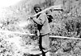
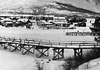
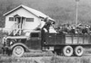
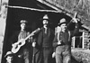
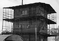
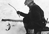

Cette exposition trace un portrait intime des Yukonnais au fil des cent dernières années. À l’aide de photographies, de cartes et d’histoires orales préservées par les Archives du Yukon, l’exposition présente l’histoire des premières nations et des autres pionniers qui ont peuplé le Yukon.
Page d'accueil Choisir la langue
Page principale Version anglaise
Page principale Version française
Archives du Yukon Coordonnées et info sur le droit de l'auteur
Histoire du Corbeau : Les ContesVoir ce tableau
Les contes font partie intégrante du patrimoine culturel des Premières nations du Yukon.
Kwäday Kwädän : AncêtresVoir ce tableau
C’est grâce aux groupes sociaux et aux systèmes de clans des Premières nations du Yukon que le partage des ressources et l’entraide d’antan font encore partie de la vie d’aujourd’hui.
Nouveaux arrivantsVoir ce tableau
Les premiers nouveaux venus sont arrivés dans le territoire au milieu du 19e siècle et la population du Yukon a continué à changer et à se diversifier jusqu’à aujourd’hui.
Transports et communicationsVoir ce tableau
Les nouveaux modes de transport, et les moyens de communications améliorés qui s’ensuivirent, ont apporté de nombreux changements dans le territoire.
Où nous habitionsVoir ce tableau
Les agglomérations et les collectivités se sont adaptées et ont évolué au rythme de l’aménagement des nouveaux corridors de transport.
Relations interpersonnelles et familialesVoir ce tableau
Dans les petites agglomérations isolées, les relations interpersonnelles sont particulièrement importantes.
L’endroit est béniVoir ce tableau
Le Yukon est la terre d’accueil de gens représentant toute une gamme de confessions religieuses.
Emplois, carrières et métiersVoir ce tableau
Le 20e siècle a engendré des possibilités d’emploi pour nombre de Yukonnais, qui ont adapté leurs compétences traditionnelles à la nouvelle économie de marché.
Bonnes perspectivesVoir ce tableau
Depuis plus de 100 ans, l’exploitation minière fait partie intégrante de la vie au Yukon et reste encore un secteur important de notre économie.
Arts, artisanat et cultureVoir ce tableau
Le Yukon a toujours joui d’une riche vie culturelle, qu’il s’agisse des traditions autochtones de danses, de chants et des contes traditionnels, ou encore des écrivains, des peintres, des musiciens, des danseurs et des sculpteurs contemporains qui viennent enrichir l’esprit du Yukon.
De vieux adages précieuxVoir ce tableau
L’éducation au Yukon est présentée sous diverses formes, variant de l’enseignement des connaissances traditionnelles à la maison et sur le terrain, aux cours réguliers dans des salles de classe.
Où on aime se retrouverVoir ce tableau
Au fil des ans, divers types d’abris et de structures ont été utilisés pour protéger les gens contre les rigueurs du climat.
Le Yukon, chez nousVoir ce tableau
Les gens du Yukon ont conjugué leurs efforts pour créer la collectivité dynamique qu’ils forment aujourd’hui.
Qui nous étions; où nous en sommesVoir ce tableau
La population du Yukon a connu de grands changements au cours des ans.
Vivre des ressources de la terreVoir ce tableau
Au Yukon, le climat rigoureux et le terrain accidenté obligent les habitants à faire preuve d’ingéniosité et de talent.
Bien du plaisirVoir ce tableau
Les Yukonnais ont toujours fait preuve d’ingéniosité et de créativité pour se divertir.
La dignité d’un districtVoir ce tableau
Les systèmes politiques et gouvernementaux du Yukon ont évolué au fil des ans.